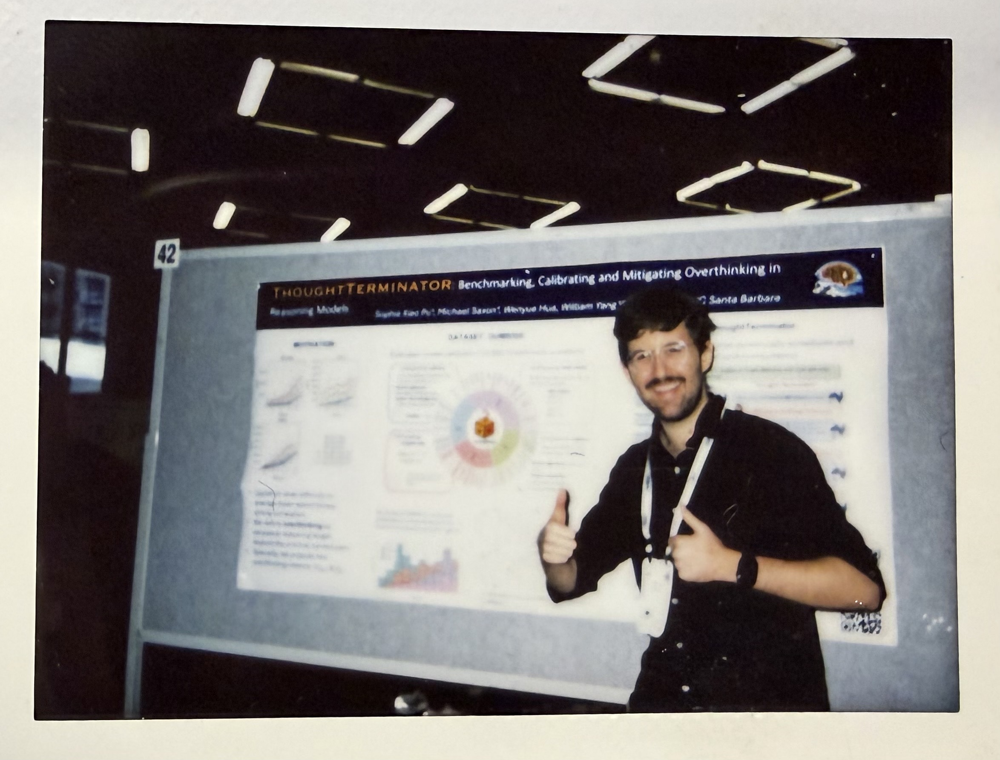

COLM 2025: 9 cool papers and some thoughts
Loading post stats...
COLM 2025 was a blast! Here I'll summarize takeaways I had from poster discussions for 9 cool papers, and I'll give some of my own reflections on the conference overall.
Benchmarking and evaluation¶
First, a certified eval enjoyer I am obligated to point some cool benchmark and metric papers! Rapid fire:
Code LMs struggle to generate good test cases¶
In Can Language Models Falsify? Evaluating Algorithmic Reasoning with Counterexample Creation Shiven Sinha (IIIT1Not to be confused with IIT, sorry for the mistake in the first post Shiven! Hyderabad) et al introduce the REFUTE benchmark for code generation.
In this neat new eval the task is writing falsifying test cases given an incorrect answer to a codeforces problem. The target is a test case that the incorrect script will fail, but a correct one will pass. For a subset of codeforces problems (with access to both incorrect and correct submissions) this is a very straightforward task to evaluate, and easy to scale by grabbing new questions as they come available.
I submit that this task should be trivially easy2This isn't to say writing falsifying test cases is trivially easy, clearly it's not! I do mean that it is necessary for a model to understand what a bug means for some code. Clearly current LMs can't do this! for a model that really understands code. Given understanding of a bug in the code, writing a test case is easy!
However, this is not the case for SOTA codeforces models. For example, o3-mini could pass 48% of these codeforces problems, but only write good counterexamples 8.6% of the time.

This eval does a good job of capturing the biggest weakness I encounter in code assistants: they suck at debugging. I could see success on this benchmark as a useful indicator for models that can more efficiently refine code and do real software engineering.
Base models are more creative than aligned¶
Peter West (UBC) demonstrated how Base Models Beat Aligned Models at Randomness and Creativity using random number guessing, mixed-strategy games, and poetry writing (as judged by humans). This has implications for a variety of problems: when the need is to sample diverse examples from a model, it's probably better to go with base. The poetry examples were particularly evocative. When assessing human notions of creativity vs human ratings of pleasantness, the example of “write a poem about coffee” illustrates the distinction.
Llama 3 base 70B (a base, non-aligned model) gives:
Adenosine wrapped in caffeine,
Dance through my receptors within.
Stimulate; neurotransmitters go insane.
Kicked inside my synapses; wake up brain!
Tulu-full (Llama 3 70B after RLHF and alignment) gives:
Rich aroma fills the air
As morning dawns, with coffee's care
Warm and dark, a soothing friend
Lifting fog, till the day's end.
Personally, for the uniqueness (and the machine-ness!) of the first one, I prefer it. But the second is definitely easier to read.
LMs struggle with long-range plot dependencies¶
In Finding Flawed Fictions Kabir Ahuja et al (UW) introduce plot hole detection as a task for evaluating long-context models. They introduce an algorithm to create plot holes inside of texts, and use this to build the FlawedFictions benchmark.

I am really happy to see contributions like this—ecologically valid and challenging long-context understanding in LMs is understudied. Despite strong and simple “needle in a haystack” results3See TechCrunch interview with Marzena Karpinska and me for more on this issue. even frontier LMs fail to generalize to basic long-context tasks such as finding easy information in long, unrelated context, or answering simple questions about long texts such as novels. FlawedFictions is a good extension to prior long-context evals like NoCha, which uses single claim verification from long texts rather than more detailed dependencies.
Item response theory smooths benchmarks¶
Finally, Fluid Language Model Benchmarking from Valentin Hoffman (Ai2) is awesome. They use item response theory (IRT) to dynamically select samples to update a latent capability estimate of a model (in a nutshell, at step n, if we think it's smart, pick a harder example, else pick easy). This gives lower-variance performance estimates which turn otherwise noisy evals into useful signals of training progress. (A model which gets 30% performance by randomly guessing noisy questions right vs one that gets it from answering hard ones is better)

I plan to talk about this paper more in the future.
Modifying and improving models¶
Data augmentation for improving long-context models¶
Given the complaints I have about long-context LMs, I was pleased to see CLIPPER from Chau Minh Pham (UMD) et al, a simple data augmentation technique based on compression to fine-tune open models to be better long-context readers.

Using an chapter-by-chapter outlines and book-level outlines they use LLMs to generate True and False claim pairs. This “compression”-based approach is then verified at small scale by human annotators, to find that 83% of generated claims are completely error-free, an absolute improvement of 66% over the prior SOTA in this form of data generation. While it would be inappropriate to use such noisy data for evaluation, for training it's much better than nothing, and 34x cheaper per sample than human annotators (used to make NoCha).
Using this augmented data they construct an SFT training set to fine-tune open Qwen, Llama, and ProLong models. This process doubles the performance of the tested models on the hardest NoChat dataset, and improves performance on NarrativeQA, MuSR, and their test set considerably. Although prior results showed that short-context claim verification data does also improve long-context, it probably shouldn't be a surprise that their long-context data improved model performance more.
That being said, at the poster Chau told me she was a bit surprised that their data didn't improve performance more. I wonder if more denoising and bumping up that 83% correct claim rate would help here?
Reducing miscalibration in bidirectional knowledge¶
RankAlign from Juan Diego Rodriguez and Wenxuan Ding (UT Austin) was another neat paper on improving models that does something refreshingly simple to address the “generator-validator gap” (GV gap) in LMs.
The GV gap refers to an LM failing to bidirectionally reflect knowledge—for example, generating Olives are a type of fruit, but answering no to are olives a type of fruit?.
They formalize the GV gap using logprobs. Given the logprobs of a word's category membership and the logprobs of the category answer given the “are a type of” prompt, calibration represents a better correlation.

Motivated from this framing they present a simple remedy: pairwise contrastive loss. Look at two (word, category) pairs. If the correlation relation is backwards, push them the other way!

This method improves performance on a few QA tasks while considerably improving the GV gap issue.
Personas¶
I used to be really incredulous about using LMs to simulate people, but I now think techniques in this space are both promising for metrology but also present peril. I want to highlight three papers in this space presenting the feasibility and risks of realistic, consistent personas.
Finetuned LMs can successfully impersonate you and trick your friends¶
IMPersona from Ben Shi (Princeton) was an awesome and scary paper. They trained LMs on real chat logs submitted by participants in order to impersonate them, and then tested these personally finetuned models on a friends and family turing test where additional participants who actually know the submitting participants had to guess if the bot was their friend or not.

Shockingly, these finetuned Llama models passed this test 44% of the time! A personalized LMs could trick your friends! Is all hope lost? Well, they checked for a few relationship variables which may predict whether an LM could impersonate you to someone else.

The best protective attributes are texting frequency and AI experience. It does not matter how “close” you are to the person, but how often you text, and how experienced they are with AI. As the presenter put it to me, “grandparents are the most likely to get fooled.” You better start texting grandma more!
Detailed life stories give more diverse and distributionally accurate simulated humans¶
In Deep Binding of Language Model Virtual Personas Minwoo Kang and Suhong Moon (UCB) the authors tackled the problem of mode collapse in simulating political poll participants (note: I really hate this application for LMs; we should be doing social science by talking to humans. But, I see other important applications for the techniques presented here.)
Rather than eliciting a Republican persona by simply prompting an LM with You are a Republican, now answer this question, they provide instead produce lengthy, multi-turn interviews with the elicited persona to serve as context. From real-world questions for multiturn interviews (the American Voices Project) they prompt a base LM (see “Base Models Beat Aligned Models at Randomness and Creativity” below for why this is important) to generate answers to each question, and then use an RLHF-tuned critic model to perform rejection sampling, removing low-quality answers.
These create rich and detailed conditioning prompts to generate more diverse personas conditioned on brief group identities. Then, they test if the distribution of persona opinions matches the distribution of real Democrat and Republican opinions including cross-group hostility and in-group vs out-group meta-perception (ie., As a Democrat I think... vs ...I think Republicans think...)

There is a scaling relationship here. As they sample more personas, the distributional gap between real human responses and LM responses closes (decreasing Wasserstein distance). As I think about adopting scaled persona sampling in my own work, I think I'll adopt these sorts of distributional measures to validate and sanity check my results. While they are checking against a specific distributional target, which you can't do in a principled way when creating personas out of whole cloth, I still think this mindset is valuable.
Personas for evaluating personalization¶
In the first paper, we saw a bit about how (specific) human assessment can evaluate persona adoption in LMs, and in the second we automated the process of distributional alignment of personas. However, both of these assessed fixed persona adoption. What about cases where we want the persona to dynamically evolve over time?
CUPID from Tae Soo Kim (KAIST) fits in to the broader literature on personalized alignment to introduce a dataset for the purpose of evaluating LM's abilities to infer and use contextual user preferences which evolve over time using simulated user interactions.
They produce personas expressed as a set of dialogue sessions: triples of some “context factor,” “contextual preference,” and a multi-turn dialogue which expresses the preference. The context factor is some literal string within the text, such as “Canon MP-E 65mm Macro Lens,” which showing up in a session would reflect a contextual preference for exact specific details regarding equipment for a photographer persona. They generate these using detailed persona descriptions and LMs, with human verification.

They then use these dialogues for two tasks, contextual preference inference and preference-conditioned generation. Checking if the preference is satisfied is non-trivial... how do you verify that “sufficient technical specificity” is present in a generated passage automatically? To do this they generate atomic checklists of requirements for each preference and check them with LM-as-a-judge.
They find that both inferring these preferences and generating answers with them is quite hard for frontier models. This was a cool application of LM-generated personas, and I think it has some “design patterns” around the character stories and rubrics that may be applied in my own work.
I have a lot more thoughts on personas, namely what even is a persona which I hope to eventually get around to writing. Maybe stay tuned? Pester me with your thoughts about this question!
Roses and thorns¶
Overall, I had a blast at COLM 2025, and I think it was just about as great as the first one. There was a great mix of people and ideas: it felt like a union of the “NLP tracks” at NeurIPS (without the AI bros) and the “ML tracks” at *ACL venues. Though the crowd was splendid to begin with, I think the event itself was structurally prone to facilitating great interactions.
The single-track format was key. For the entire duration of the conference, all participating attendees are in roughly the same area, or the same chokepoints around and near it. Even though I mainly participate in the hallway track at conferences, I could reliably run into people to have fun conversations with in the same few places.
The poster sessions were long. More conferences should do this. I get way more out of poster sessions than talks. I want people to talk with me, not at me, and I would prefer to be able to pause and fast forward oral presentations on my own time. The two hour-long sessions gave me plenty of time to make my way through and take a real glance at all the posters. Not only is 2h a long time on an absolute level, at COLM the time per poster was quite high as well.
Unfortunately both of these pros stem from COLM's size. As it grows it may become hard to sustain this heavily participatory format. Perhaps a few things can preserve COLM's character as it grows. First, we should not run orals and poster sessions simultaneously. Even as the number of parallel poster tracks grows, they at least won't be competing for attention with orals, and all participants will be in the same vicinity rather than split between auditoriums, hallways, and meeting rooms. Also, the overall poster time to oral time ratio must be preserved (or increased). If this means fewer oral sessions overall, so be it! Posters are better anyway!
On a personal level, it was super fun to present our reasoning model work (ThoughtTerminator) which is probably the most zeitgeisty conference presentation I have ever given. I definitely got more interactions out of it and didn't feel a need to hard sell the value of my work as much as I have in the past. Catching up with so many of my conferences friends after a job market year was really fulfilling. The social element is probably my favorite part of being a scientist.

As of now, unlike NeurIPS, there is not that much involvement of big lab or AI safety folks yet, which feels like a double-edged sword. Though that work isn't my cup of tea, it's very relevant, and I'd like to be around some of it!
Given the amount of positive attention the conference is getting, I do have some concerns. I am a little worried that it has been so great so far because it is small and not a prestige target. Nobody who is optimizing for bean counters is focusing on COLM yet, so the reviewing process isn't overwhelmed, and really dynamic, interested people are the only ones showing up. Will that change as it grows? Also, because it isn't yet “the arena” it hasn't been overrun by AI bros. Will that change as it grows?
Finally, as much as I love Canada, I think putting top ML conferences there is getting a lil played out. I have visited the big 3 cities of Canada in a shorter period of time than I have the US, thanks solely to conferences. As a certified West Coast bro, I have literally spent more time in the big 3 Canadian cities than I have New York City. Considering the visa issues that people are having with Canada (and the US) can we do better with conference venue selection?
I don't want to end on a negative note, so I will reiterate: COLM was amazing and I will continue to prioritize it.
-
Not to be confused with IIT, sorry for the mistake in the first post Shiven! ↩
-
This isn't to say writing falsifying test cases is trivially easy, clearly it's not! I do mean that it is necessary for a model to understand what a bug means for some code. Clearly current LMs can't do this! ↩
-
See TechCrunch interview with Marzena Karpinska and me for more on this issue. ↩